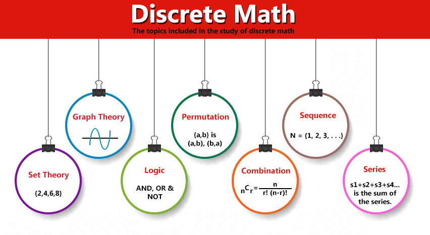

Discrete mathematics is one of the core components of mathematics at the undergraduate level. The modern computer science is built almost entirely on discrete math, in particular combinatorics and graph theory. This gives the understanding of importance mathematical concepts together with a sense of why these are important for application and student will be thinking flexibly and creatively right out of the box. This means in order to learn the fundamental algorithms used by computer programmers, students will need a solid background in this subject.
The course has more than one purpose and designed to teach students a particular set of mathematical facts and how to apply them, how to think logically and mathematically, mathematical reasoning and the different ways to solve problems. Five important themes are interlinked in this course, mathematical reasoning, combinatorial analysis, discrete structures, algorithmic thinking, and applications and modeling.